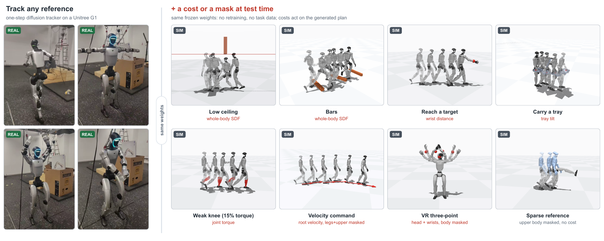
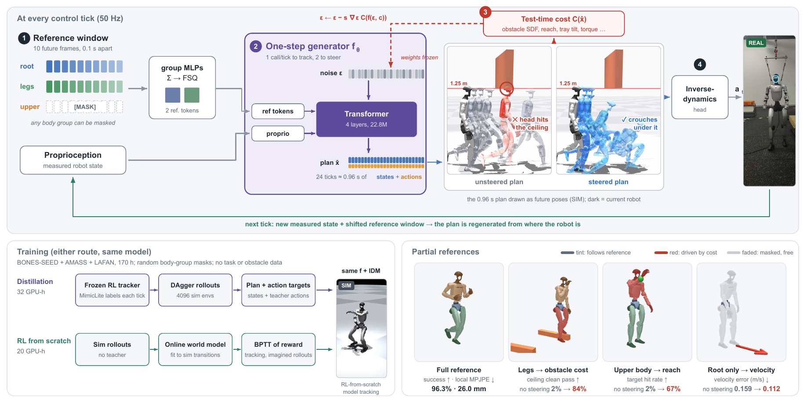

One frozen tracker that follows any motion, bends around obstacles when you hand it a cost, and tells you which motions it cannot track yet.

At each 50 Hz tick a one-step diffusion generator plans future states and actions from a sliding reference window. An inverse-dynamics head executes the plan. Train it by distilling a teacher, or with RL from scratch.
Gradient steps on the input noise pull the plan toward any differentiable cost. Masked body groups give way to the cost while the rest keeps tracking.
Feed one reference with different noise samples. Where the plans disagree, the tracker usually fails. No simulator, no extra model.
DiffWBC tracking reference motions on the real robot, one generator call per 50 Hz tick. The overhead gantry is a slack safety line.
Every clip is a closed-loop physics rollout. Panels run left to right. The leftmost panel is the reference or the RL teacher. The others are DiffWBC, without and with steering.

A deterministic tracker maps a reference to an action, so the only handle at test time is the reference itself. DiffWBC instead models the future. The plan is regenerated from the robot's real state at every tick, so a cost applied to the plan acts in closed loop by construction.
Plain tracking needs one generator call (3.8 ms). Default steering uses 2 calls × 2 descent steps (20.3 ms per tick). Harder reaching targets use 12 steps (55.1 ms).
All methods run in one common harness: MuJoCo sim-to-sim, official checkpoints, 150 windows per set. Errors are on successful clips. Best in bold, second underlined.
| AMASS held-out subjects | BONES unseen actors | ||||||
|---|---|---|---|---|---|---|---|
| Method | Succ. (%) ↑ | El (mm) ↓ | Eg med. (mm) ↓ | Succ. (%) ↑ | El (mm) ↓ | Eg med. (mm) ↓ | Steerable |
| SONIC (release) | 98.7 | 31.9 | 99.2 | 96.7 | 24.3 | 50.4 | no |
| SONIC (v1.1) | 98.0 | 30.5 | 126.2 | 96.7 | 23.7 | 61.5 | no |
| HoloMotion | 95.3 | 43.5 | 119.1 | 96.7 | 35.2 | 89.4 | no |
| HEFT (pmg) | 92.7 | 29.4 | 127.0 | 96.7 | 21.5 | 51.6 | no |
| Humanoid-GPT | 95.3 | 44.5 | 254.3 | 96.0 | 30.9 | 88.9 | no |
| MimicLite Huge (teacher) | 94.0 | 29.9 | 138.6 | 97.3 | 24.4 | 62.3 | no |
| DiffWBC (distilled) | 95.3 | 31.4 | 135.5 | 96.7 | 24.7 | 62.2 | yes |
| DiffWBC (RL from scratch) | 96.7 | 26.5 | 107.6 | 97.3 | 20.1 | 45.5 | yes |
The distilled model is on par with its RL teacher. The model trained from scratch with RL, with no teacher, has the lowest local error El on both sets.
The RL teacher tracks a reference edited with the same cost, either offline or at every tick (closed loop). DiffWBC is steered inside the generator. Time is controller time per tick.
| Method | Bars loose ↑ | Ceiling 1.30 m ↑ | Ceiling 1.25 m ↑ | Ceiling 1.20 m ↑ | Reach hit ↑ | Time (ms) ↓ |
|---|---|---|---|---|---|---|
| Teacher, original reference | 0.48 | 0.36 | 0.02 | 0.00 | 0.01 | 2.5 |
| Teacher, offline edit | 0.58 | 0.72 | 0.06 | 0.00 | 0.38 | 2.5 |
| Teacher, closed-loop edit | 0.57 | 0.87 | 0.10 | 0.02 | 0.60 | 330.5 |
| DiffWBC, no steering | 0.40 | 0.23 | 0.02 | 0.00 | 0.02 | 3.8 |
| DiffWBC, steered | 0.68 | 0.95 | 0.84 | 0.52 | 0.75 | 20.3–55.1 |
The edited reference asks for crouches the deterministic tracker cannot execute, so editing even at every tick stays at 0.10 under a 1.25 m ceiling. Steering the generator reaches 0.84 and runs 6–16× faster than the closed-loop edit.
Give the generator the same reference and proprioception with K = 8 different noise samples. If the model has learned a motion well, the eight plans agree. If it has not, they spread out. We use the 95th percentile, over time, of the per-joint standard deviation of the planned joint positions as the score. It needs only the reference and the model: no simulator rollout and no extra network. Scoring 100 clips takes about 7 seconds.
Evaluation set: 7,884 library clips, including those the base policy finds hardest. Labels: whether the RL-from-scratch tracker (60k iterations) falls in mjlab. 537 clips fail (6.8%).
Clips ranked by score, in bins of 2% of the set. Dashed line: base rate 6.8%.
All scores are simulator-free. Orange: derived from the diffusion generator.
| Top | Noise spread | Plan deviation | Critic | Spread + critic |
|---|---|---|---|---|
| 1% | 0.91 / 0.13 | 0.87 / 0.13 | 1.00 / 0.15 | 1.00 / 0.15 |
| 2% | 0.91 / 0.27 | 0.68 / 0.20 | 0.85 / 0.25 | 0.97 / 0.28 |
| 3% | 0.79 / 0.35 | 0.58 / 0.25 | 0.74 / 0.33 | 0.86 / 0.38 |
| 5% | 0.68 / 0.50 | 0.44 / 0.33 | 0.57 / 0.42 | 0.67 / 0.49 |
| 10% | 0.41 / 0.61 | 0.35 / 0.51 | 0.37 / 0.54 | 0.41 / 0.60 |
| 20% | 0.24 / 0.69 | 0.22 / 0.64 | 0.23 / 0.67 | 0.24 / 0.71 |
Precision / recall. A threshold picked on half of the chunks (top ~6%) gives precision 0.61 and recall 0.49 on the other half.
Failure rate when each score is split at its median. Rarity is the kNN distance of a clip's reference statistics to the rest of the library.
Combined AUC 0.87. Rarity alone ranks broadly (0.81), but the spread is twice as precise at the very top.
Fine-tune the RL-from-scratch tracker for 8k iterations on the 329 clips its own score ranks hardest, then re-run all 7,884 clips in simulation and compare clip by clip. To keep what it already masters, half of the environments replay the full library with a consolidation loss toward the frozen base and keep their RL return.
| Run | Failures fixed ↑ | Untouched clips broken ↓ | Library failure rate ↓ |
|---|---|---|---|
| Base model, new simulation seed (noise floor) | 78 / 501 (16%) | 0.9% | 6.4% → 6.4% |
| Fine-tune, consolidation loss only | 189 / 501 (38%) | 4.6% | 6.4% → 8.2% |
| Fine-tune, consolidation + RL on mastered clips | 212 / 501 (42%) | 1.1% | 6.4% → 4.7% |
Without the RL term the fine-tuned model fixes failures but breaks 4.6% of clips it used to track, so the library failure rate goes up. Keeping RL return on mastered clips removes that regression. Clips in these runs were ranked by plan deviation.
Same recipe, 329 clips each. Success on held-out failures: same are unseen clips of trained families, fam are 41 unseen families. hard40 checks that dense tracking is kept.
| Clips selected by | same ↑ | fam ↑ | hard40 succ. / El |
|---|---|---|---|
| No fine-tuning | 0.11 | 0.26 | 0.95–0.975 / 35 mm |
| Random clips | 0.07 | 0.24 | – |
| Plan deviation | 0.45 | 0.39 | 0.95 / 34.4 mm |
| Noise spread | 0.42 | 0.48 | 0.975 / 35.7 mm |
Single seed. Each fam clip is worth 0.009, so the 0.09 gap is about 10 clips.
@inproceedings{diffwbc2027,
title = {DiffWBC: Unlocking Steerable General Humanoid Motion Tracking
via One-Step Diffusion Whole-Body Control},
author = {Anonymous},
booktitle = {Under review},
year = {2027}
}